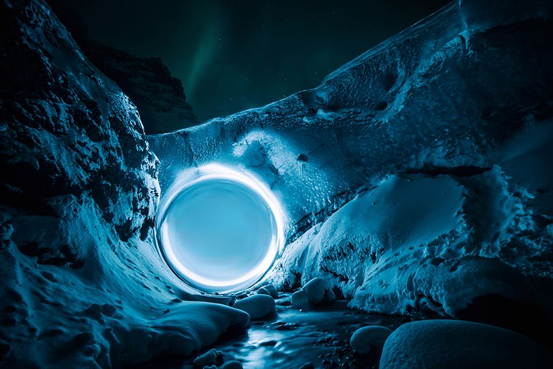
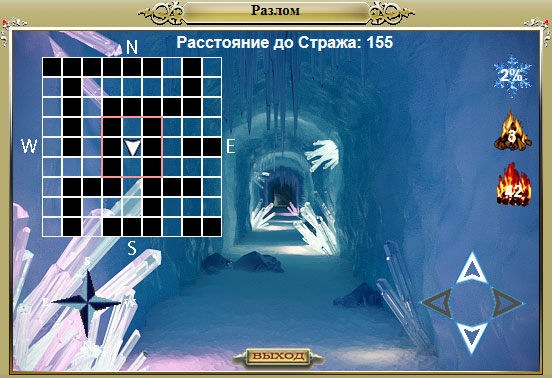

Это цикл статей, посвященный контенту в Северных землях – как пройти, что там есть, что, вероятно, будет и т.д.
Северные земли – контент для высокоуровневых персонажей, прошедших Шпиль Черной башни и Затерянную долину (по сюжетной линии игры), включающий новых монстров и особую механику переохлаждения от перемещения и от особых навыков монстров в бою.
- Как попасть в Северные земли. Снежная башня
- Особенности Северных земель. Локации и контент
- Разломы
- Квест Кровь на снегу.
- Квест Короткое замыкание
Разломы. Прохождение и хитрости
Описание
Достаточно исчерпывающее описание Разломов можно найти на официальном сайте игры. Если не вдаваться в подробности – Разлом, это подземелье, которое периодически появляется на севере, за прохождение которого можно получить Руну разлома.
- Разлом появляется в среднем каждые 49 часов.
- Информация о появлении Разлома выводится в общем чате Системой.
- Чат-бот запоминает время открытия и закрытия последнего Разлома – можно обратить к нему с вопросом “Где разлом?”, чтобы получить необходимую информацию.
- На закрытие Разлома дается 24 часа.
- Разлом общий для всех аватаров.
- Разлом является подземельем (важно для Рейдеров и Следопытов).
- В Разломе действуют Отряды.
- Размер Разлома: 39×39
- Карта каждого Разлома уникальна.
- Кристаллы спасения работают в Разломе.
- В Разломе активна локальная мини-карта
- В Разломе действует переохлаждение.
- На 1 согрев 4 бревна или 1 искристый уголь
- В разломе обитают:
- Баньши
- Ледяные охотники
- Вампиры-лорды
- Скелеты-лучники
- Тени смерти
- Жрецы тени
- Послушники тени
- Тени забвения
- Боссы
- Хранитель разлома
- Тень Хранителя разлома
- Страж разлома
Прохождение разлома. Награда
Для прохождения Разлома аватару необходимо найти и победить Хранителя разлома. Первоначально Хранитель разлома очень силен (как Черная королева из паучьего подземелья) и для его ослабления необходимо найти и убить 2 Тени Хранителя разлома. С каждой убитой Тенью, Хранитель ослабевает.
Хранитель Разлома, обычно, располагается в одном из самых дальних тупиков от входа в Разлом. Тени Хранителя разлома расположены в случайных тупиках – их можно встретить и почти на входе в разлом, и в самых дальних тупиках.
Между входом в Разлом и Хранителем разлома бродит Страж разлома (делает 2 шага в минуту) – невероятно сильный монстр, победа над которым практически невозможна. Для того, чтобы избежать встречи со Стражем, необходимо следить за информацией о расстоянии до него и прятаться в ответвлениях Разлома. Нападает (или вмешивается в бой) Страж в случае, если встает на соседнюю с аватаром клетку.

Как ни странно, наличие Стража в некоторой степени помогает прохождению Разлома – информация о расстоянии до Стража косвенно показывает, сколько шагов осталось до Хранителя разлома и в правильном ли направлении идет аватар.
Например, если расстояние до Стража сокращается, когда игрок стоит на месте входа в Разлом, значит Страж идет от Хранителя ко входу в Разлом, следовательно, если при передвижении аватар сокращает эту дистанцию, значит он идет в правильном направлении – к Хранителю. Если эта дистанция начинает увеличиваться, значит игрок зашел в одно из ответвлений, которое не приведет к Хранителю, но может привести к Тени Хранителя.
Таким образом, при удачном стечении обстоятельств, можно пойти напрямую к Хранителю разлома, однако в данном случае есть опасность пропустить все Тени Хранителя, что сделает убийство самого Хранителя очень сложной задачей.
За победу над боссами, аватар получает:
- Всегда:
- Акварит
- Титанитовая руда
- Искристый уголь
- Руна 3 типа или Руна разлома (за победу над Хранителем)
- С некоторой вероятностью:
- Руны 2 или 3 типа (за победу над Тенями и Стражем разлома)
После победы над Хранителем, Разлом закрывается для всех аватаров.
Немного о боссах.
Хранитель разлома и его Тени.
Хранитель разлома и его Тени копируют параметры, навыки, заклинания и особенности сильных монстров закрытого мира – Баньши, Гир-о-големов, Демонов и т.д. Основным защитным параметром Хранителя является поглощение урона – если аватар не убил ни одной Тени, значение поглощения Хранителя составит 99%. Убийство теней снижается поглощение.
Страж разлома
Это монстр имеет 95% поглощение урона, 300% шанс блокировать атаку щитом, -50 ОД на действие и множество других титанически развитых параметров. Победа над ним возможна только в слаженной, сильной команде игроков:
- Нужны Отравители, Темные маги, Танк, Светлые маги
- Страж в большей степени уязвим к отравлениям, контратакам, целям с большой защитой (более 10 000 защиты)
- Игроки начинают базовый бой с монстрами в Разломе – примерно в 50 шагах от Стража
- Когда Страж дойдет до аватаров, у них уже будет накоплено достаточно ОД для боя
Без накопления ОД в базовом бою убить Стража практически невозможно – его нельзя замедлить параличами или алхимией, а сам он убивает с одного удара большинство аватаров закрытого мира.
Мнение автора статьи
Выводы по Разломам
В текущей реализации, Разломы предоставляют аватарам возможно получить Руну разлома каждые 49 часов (с вероятностью 50%). Таким образом, за год, с учетом закрытия всех Разломов (178 Разломов в год), игровой мир может получить в свое распоряжение 89 Рун разлома, из которых половина сгорит в течение года (вставленные в вещи Руны разлома действуют 6 месяцев) – такое количество рун однозначно не может покрыть все потребности игроков в рунировании вещей.
Для повышения количества Рун разлома на рынке, игроки могут пройти квест Кровь на снегу – после прохождения данного квеста открывается возможность покупки Рун разлома раз в 2 месяца за золото и искристый уголь. Следующую статью посвятим прохождению данного квеста.